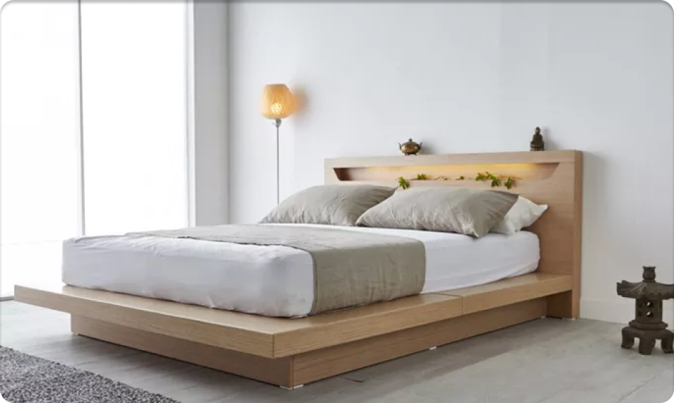

Tips Memilih Kasur agar Tidur Berkualitas
Perlu diketahui bahwa kasur yang tidak tepat bisa berpengaruh pada kualitas tidur dan kesehatan Anda. Agar tidur selalu berkualitas, simak tips memilih kasur berikut ini.
Tidur nyenyak adalah salah satu cara untuk menjaga dan meningkatkan kesehatan. Karena itu, kasur yang nyaman juga merupakan faktor yang penting untuk diperhatikan. Lalu, bagaimana tips memilih kasur yang tepat?
Permukaan tempat tidur yang tidak sesuai dapat menyebabkan ketegangan pada otot, serta membuat tidur Anda terganggu
. Nah, tidur yang terganggu dapat membuat waktu tidur Anda berkurang. Padahal, seseorang harus memiliki waktu tidur 7-8 jam per hari. Bila Anda kurang tidur, daya tahan tubuh bisa melemah. Berikut adalah tips memilih kasur yang bagus untuk kesehatan:
-
1. Sesuaikan Tipe Kasur dengan Kebutuhan
-
Spring bed merupakan jenis kasur yang paling terjangkau. Tersusun
dari serangkaian baja pegas berbentuk spiral yang dilapisi dengan
busa tebal sehingga cukup nyaman untuk tulang punggung.
- Memory foam merupakan kasur yang terbuat dari beberapa lapisan busa dengan kepadatan yang bervariasi sehingga akan lebih menyesuaikan kontur tubuh dan posisi tidur.
-
Lateks merupakan jenis kasur yang terbuat dari bahan alami dan
tipenya mirip dengan memory foam. Kasur ini lebih kokoh sehingga
cocok untuk Anda yang memiliki masalah pada bagian punggung.
-
Sebaiknya kunjungi toko secara langsung. Dengan begitu, Anda bisa
lebih jelas mendapatkan informasi terkait berbagai tipe, bentuk,
dan desain yang akan dipilih.
2. Perhatikan Kelembutan Kasur - Single size: 90 cm x 200 cm
- Double size: 120 cm x 200 cm
- Queen size: 160 cm x 200 cm
- King size: 180 cm x 200 cm
- Super king size: 200 cm x 200 cm
Kasur yang baik untuk kesehatan harus sesuai dengan kebutuhan, agar memberikan Anda kenyamanan yang maksimal. Ada beberapa tipe kasur yang bisa dipilih, di antaranya spring bed, memory foam, dan lateks.
Tips memilih kasur berikutnya adalah perhatikan kelembutan kasur. Ingat, kasur yang lembut tidak menunjukkan bahwa kasur tersebut bagus bagi kesehatan. Pada kenyataannya, kasur yang terlalu lembut tidak dapat menunjang secara rata berat tubuh Anda. Namun, hanya menunjang titik tubuh paling berat saat tidur. Itu membuat otot-otot Anda malah tidak dapat beristirahat, karena harus bekerja mencari posisi yang nyaman dan mempertahankannya.
3. Pastikan Kasur Memberikan Kenyamanan
Kenyamanan setiap orang pasti berbeda-beda. Jadi, sebelum membeli kasur, cobalah untuk berbaring di atasnya. Ini adalah tips memilih kasur yang penting, karena kasur yang dapat menjaga tulang belakang tetap lurus adalah yang terbaik.
4. Perhatikan Posisi Tidur
Setiap orang memiliki posisi tidur yang paling disukai. Karena itu, untuk memilih kasur yang baik untuk kesehatan, pilih kasur yang dapat menopang posisi tidur kesukaan Anda.
Saat Anda dalam posisi tidur favorit, pastikan kasur mampu mempertahankan kesejajaran tulang belakang. Hal ini akan membantu Anda terhindar dari rasa sakit dan nyeri.
5. Pilihlah Ukuran Kasur Sesuai Kebutuhan
Tips memilih kasur lainnya yang perlu diperhatikan adalah sesuaikan ukuran kasur dengan kebutuhan. Jadi, penting untuk mencermati tinggi dan lebar kasur.
Ukuran ideal kasur, yaitu lebih tinggi 10 hingga 15 cm dari tinggi badan pemiliknya. Jadi, ketika membeli kasur, pastikan ukuran kasur sesuai.
Kini, ada berbagai istilah yang merujuk pada ukuran kasur, yaitu:
Spring Bed

Bantal Bulu Domba
Rp.40.000
Bantal Bulu Domba
Rp.40.000
Bantal Bulu Domba
Rp.40.000